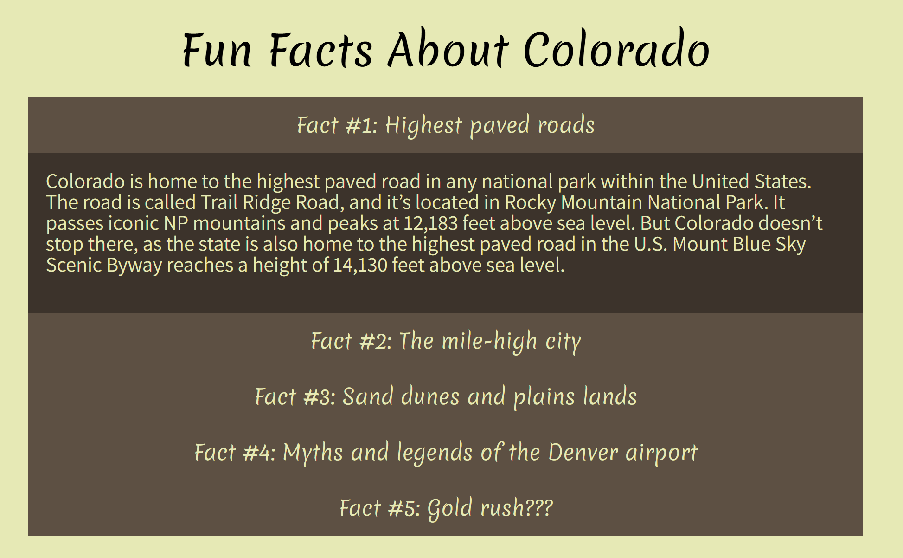

Colorado
- 
-

Background
“Exploring Colorado” was my final project for an advanced JavaScript and web dev class.
Skills
- HMTL, CSS, & JavaScript
- UI/UX Design
- Research & Problem-Solving
Process
This project required extensive research. I brainstormed the best ways to portray the state – what came to mind was the rocky mountains and rolling landscape, so I created a gallery. Next, I needed to transport users to the state so I researched Colorado colors and themes, and came back with the tan and orange color scheme. But what does it really feel like to be in Colorado? What better way than to picture a place than with real data, leading to the API weather feature.
Summary
In the end, I created a comprehensive way to learn about Colorado. The visualization feature can help you picture the picturesque landscapes, and the weather tool can give you a sense of what it feels like to be in Colorado. While the about and fun facts sections provide a place to learn more about the history and details of Colorado. On the technical side, the end result was a comprehensive, single-page site web dev skills.